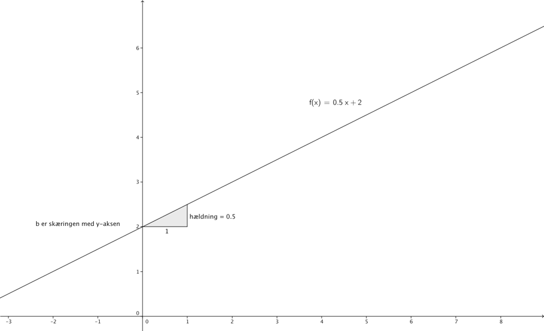
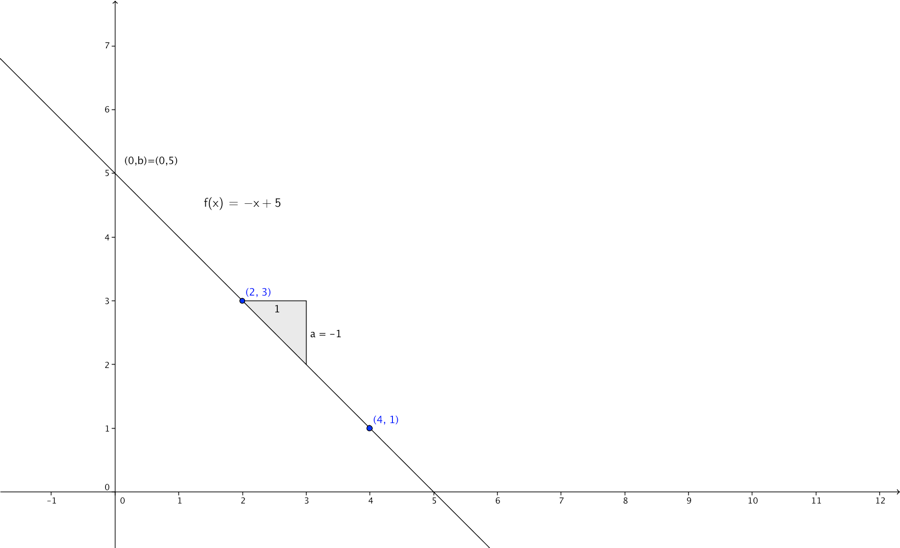
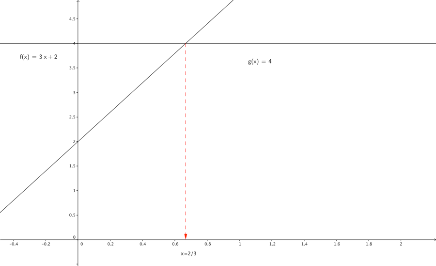
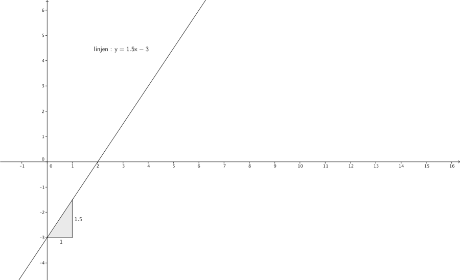
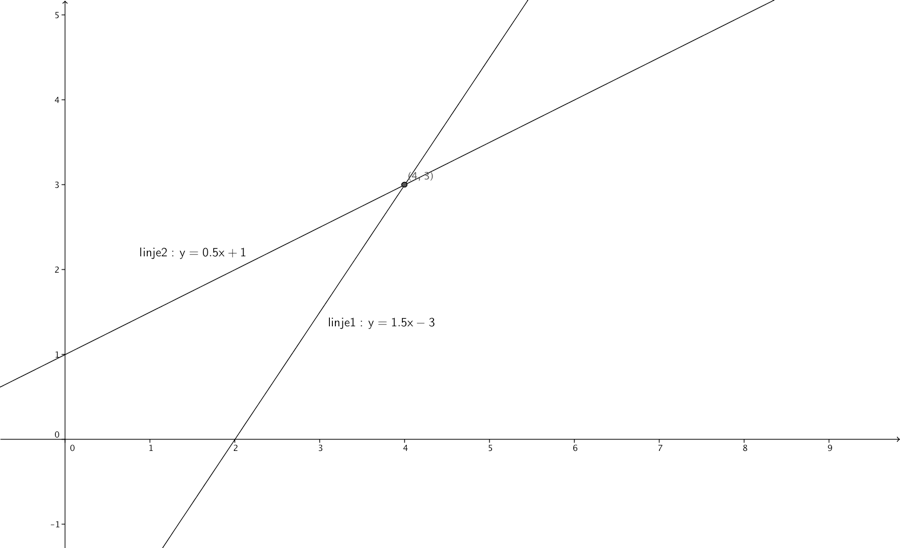
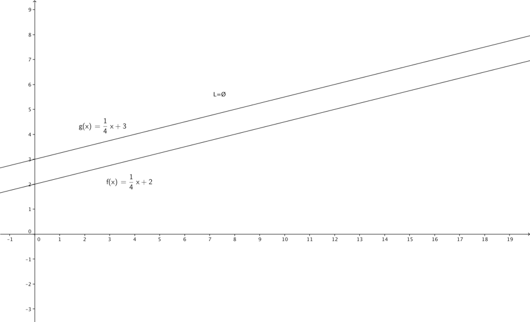
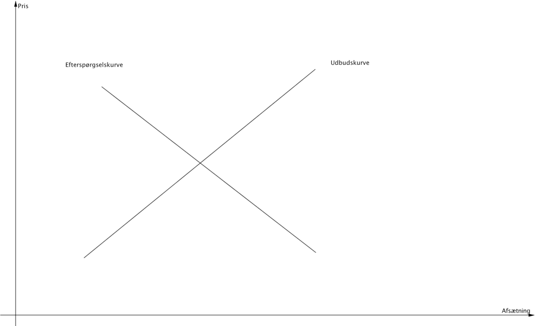
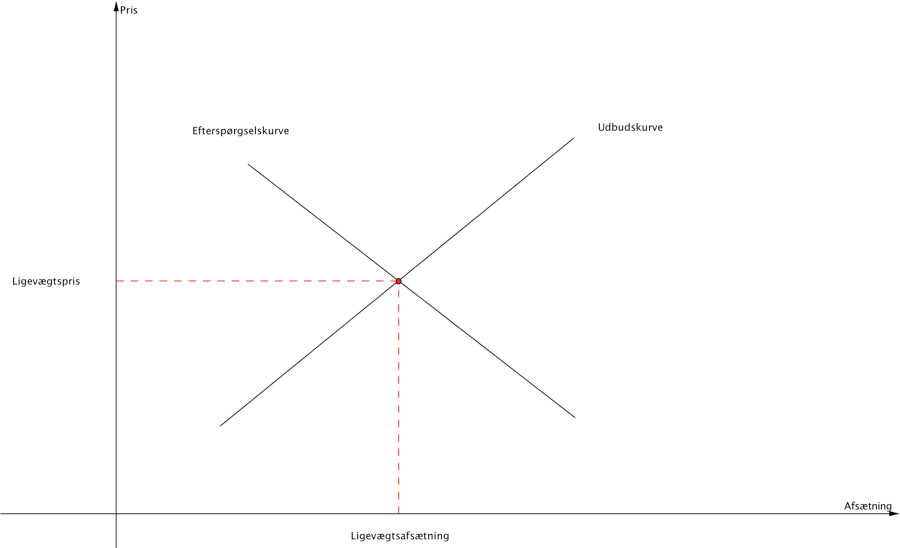

Kapitel 3 Lineære funktioner
3.0.1 Video funktioner
3.0.2 Video Geogebra hjælpeprogram til funktioner
Man kan med fordel benytte fx. Geogebra til at tegne og arbejde med funktioner.
3.0.3 Generel Forskift

En funktion er et redskab, der beskriver sammenhængen mellem en uafhængig variabel x og en afhængig variabel y = f(x). Formen for en lineær funktionsforskrift skrives som:
\[f\left( x \right) = ax + b\]
\[hvor\ a,\ b\ \in \mathbb{R}\]
Vi kalder a for hældningskoefficienten, dette tal fortæller hvor meget y ændrer sig når x vokser med 1. Det vil sige hvor meget ændres funktionsværdien, når vi går en til højre på x-aksen. b er skæringen med y-aksen. Punktet hvor linjen skærer y-aksen har altid første-koordinat 0, dvs. punktet hedder (0,b).
På figuren ovenfor er \(f\left( x \right) = 0,5x + 2\) tegnet ind. Her ses som nævnt, at linjen skærer y-aksen i (0,2), og hældningskoefficienten er 0,5.
Når man indsætter en x-værdi i funktionsforskriften får man funktionsværdien eller y-værdien. F.eks. vil x=2 give en y-værdi \(f\left( 2 \right) = 0,5 \cdot 2 + 2 = 3\), det betyder punktet \(\left( 2,\ 3 \right)\) ligger på den rette linje.
En lineær funktion med positiv hældning \(\left( her\ a = 0,5 \right)\) er en monotont voksende funktion, en sådan funktion ligner en bakke der går opad. Jo større a er des stejlere er bakken. En lineær funktion med negativ hældning, er en funktion der er monotont aftagende, det er en funktion der går nedad.
3.1 Bestemmelse af forskrift baseret på 2 punkter
Hvis vi kender 2 punkter \(\left( x_{1},y_{1} \right)\ og\ (x_{2},y_{2})\) på en ligning kan vi bestemme funktionsforskriften, \(f(x) = ax + b\)
\[a = \frac{y_{1} - y_{2}}{x_{1} - x_{2}}\]
\[b = y_{1} - ax_{1}\]
Hvorfor ? Fordi vi kan skrive opskrive 2 ligninger med 2 ubekendte (a og b), når vi kender den generelle funktionsforskrift og de to punkter:
\[y_{1} = ax_{1} + b\]
\[{y_{2} = ax_{2} + b}\]
Se i senere afsnit hvordan man kan løse 2 ligninger med 2 ubekendte, her er de ubekendte jo a og b alle andre størrelser i ligningerne er kendte. Man kan så trække den ene ligning fra den anden, så forsvinder b, og man har en ligning med en ubekendt tilbage.
Hvis vi kender 2 punkter (2,3) og (4,1) på en lineær funktion og ønsker at bestemme forskriften, kan vi altså først finde a:
\[a = \frac{y_{1} - y_{2}}{x_{1} - x_{2}} = \frac{4 - 2}{1 - 3} = - \frac{2}{2} = - 1\]
Bemærk det er ligegyldigt hvilket punkt man vælger som \((x_{1},y_{1})\) og \((x_{2},y_{2})\), men rækkefølgen i brøken, når man har valgt, er vigtig.
Man bestemmer nemt b, da det nu er den eneste ukendte i de 2 ligninger, behøver vi blot indsætte de øvrige kendte værdier i den ene ligning.
\[b = y_{1} - ax_{1} = 3 - \left( - 1 \right) \cdot 2 = 5\]
Så forskriften bliver altså
\[y = - x + 5\]

3.2 Løsning af ligninger
3.2.1 Video Løsning af ligninger
3.2.2 Video Løsning af uligheder
Vi har følgende regneregler for ligninger:
Man må addere og subtrahere med en konstant c, når man gør det på både højre og venstresiden.
\[Nar\ a = b\ er\ a + c = b + c\]
\[Nar\ a = b\ er\ a - c = b - c\]
$$$$
Man må multiplicere og dividere med en konstant c forskellig fra 0, f.eks:
\[Nar\ a = b\ er\ a*c = b*c\]
\[Nar\ a = b\ er\frac{a}{c} = \frac{b}{c}\]
At løse en ligning betyder: bestem de variabelværdier for hvilken ligningen er sand, vi kalder mængden af disse værdier løsningsmængden L. Hvis vi betragter 1. Grads ligningen:
\[3x + 2 = 4\]
Her tilhører x=3 f.eks. ikke løsningsmængden L. for
\[3*3 + 2 \neq 4\]
Man kan hurtigt bestemme løsningsmængden ved at isolere x.
\[3x + 2 = 4 \Leftrightarrow\]
\[3x + 2 - 2 = 4 - 2 \Leftrightarrow\]
\[3x = 2 \Leftrightarrow\]
\[\frac{3x}{3} = \frac{2}{3} \Leftrightarrow\]
\[x = \frac{2}{3}\Leftrightarrow\]
\[L = \{\frac{2}{3}\}\]
Du kan bruge Wolframalpha til at tjekke dit resultat, indsæt 3x + 2 = 4 nedenfor og tryk enter, så løser Wolframalpha ligningen for dig. Det er en god ide at benytte Wolframalpha som facitliste i starten, når du løser ligninger.
Der findes specialtilfælde af ligninger hvor L = Ø dvs. ingen løsning.
\[{5x = 7 + 5x}\Leftrightarrow{0x = 7}\Leftrightarrow{\ L = Ø}\]
Da der ikke findes x-værdier der kan gøre ligningen 0x=7 sand, siger vi løsningsmængden er Ø eller tom. Wolframalpha skriver “no solutions exist”.
Der findes også ligninger der er sande ligegyldigt hvilken værdi x har, så skriver vi:
\(L\mathbb{= R}\)
\[{5x + 3 = 7 + 5x - 4}\Leftrightarrow{0x = 0}\Leftrightarrow{\text{L}=\mathbb{R}}\]
Man kan måske få en bedre forståelse ved at løse 1. Gradsligningen, ved at indtegne hhv. højre- og venstreside som funktioner i et koordinatsystem.

3.3 2 ligninger med 2 ubekendte.
3.3.1 Video 2 ligninger med 2 ubekendte.
En ligning med 2 ubekendte kan f.eks. være:
\[3x = 2y + 6\]
Denne ligning kan vi omskrive til:
\[{y = 1\frac{1}{2}x - 3}\]
I koordinatsystemet vil denne ligning kunne afbilledes som nedenfor:

Hvis man skal løse 2 ligninger med 2 ubekendte, skal man gøre det samme, som når man løser en ligning med en ubekendt. Man skal altså finde de værdier af de 2 ubekendte der gør begge ligninger sande samtidigt. Vi kalder også 2 ligninger med 2 ubekendte for et ligningssystem. Sådanne ligninger med 2 ubekendte kan tegnes som rette linjer i et koordinatsystem, og derefter løses grafisk. Det betyder ikke noget at de ubekendte hedder noget andet end x og y, man navngiver dem blot som hhv. x og y. Hvis man tegner ligningerne med de 2 ubekendte ind i koordinatsystemet, er skæringspunktet mellem de to rette linjer, netop der hvor begge ligninger er sande.
Hvis vi f.eks. skal løse de 2 ligninger:
\[3x = 2y + 6\]
\[y = \frac{1}{2}x + 1\]
Kan vi omskrive dem dvs. isolere y’erne på venstresiden:
\[y = 1\frac{1}{2}x - 3\]
\[y = \frac{1}{2}x + 1\]
Og vi indtegner disse og finder skæringspunktet:
\[3x = 2y + 6\]
\[y = 2x + 1\]

Ligesom med en ligning kan løsningsmængden være tom (hvis de 2 linjer de 2 ligninger danner er parallelle) eller \(\mathbb{R}^{2}\), (hvis ligningerne der dannes er identiske ). Men oftest vil linjerne skære hinanden.

Der findes flere metoder til løsning af 2 ligninger med 2 ubekendte bl.a. substitutionsmetoden. Når vi benytter substitutionsmetoden, isolerer vi y i begge ligninger:
\[y = 1\frac{1}{2}x - 3\]
\[y = \frac{1}{2}x + 1\]
Vi ved at y i første og anden ligning skal have samme værdi når vi finder en løsning. Derfor ved vi også at venstresiderne skal være ens. Vi sætter så venstresiderne lig med hinanden og isolerer x:
\[1\frac{1}{2}x - 3 = \frac{1}{2}x + 1\]
\[1\frac{1}{2}x - \frac{1}{2}x = 3 + 1\]
\[x = 4\]
Vi ved nu at når x er lig med 4, har vi en løsning. Så kan vi bare indsætte x=4, i en af de oprindelige ligninger og finde værdien af y.
\[y = 1\frac{1}{2}x - 3\]
\[y = 1\frac{1}{2} \cdot 4 - 3\]
\[y = 3\]
og vi ser at vi får samme løsning som da vi benyttede den grafiske metode.
\[(4,3)\]
Man kan løse ligningssystemer med flere end 2 ubekendte med matrix kommandoerne mmult og minverse i excel, men dette når vi ikke at gennemgå på dette kursus.
3.4 Udbuds- og efterspørgselskurver
En vares prissætning er afgørende for hvor meget man kan afsætte af den pågældende vare. Jo højere pris desto færre varer kan man afsætte. Tilsvarende vil prissætningen være afgørende for, hvor meget producenterne vil udbyde, jo højere pris des flere varer udbydes. Vi forudsætter her at sammenhængen mellem pris og afsætning er lineær. Vi kan tegne efterspørgselskurver i et koordinatsystem med pris på y-aksen og afsætning på x-aksen. Dette er omvendt af hvordan vi normalt i matematik ville tegne en lineær funktion, idet vores forklarende variabel pris der styrer afsætningen er y.

Efterspørgselskurven har negativ hældning og udbudskurven har positiv hældning.
Et marked er i ligevægt hvor udbuds- og efterspørgselskurven skærer hinanden.

Hvordan finder vi ligevægtspris og afsætning?
Det gør vi ved [substitutionsmetoden], som vi så tidligere.